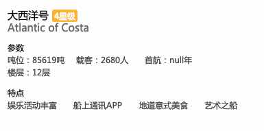

<!DOCTYPE html>
<html>
<head><meta name="generator" content="Hexo 3.9.0">
  <meta charset="utf-8">
  

  
  <title>自动处理对象结构中 null 字段的 babel 插件 | QINGGUOING</title>
  <meta name="viewport" content="width=device-width, initial-scale=1, maximum-scale=1">
  <meta name="description" content="babel-plugin-pipe">
<meta name="keywords" content="babel-plugin">
<meta property="og:type" content="article">
<meta property="og:title" content="自动处理对象结构中 null 字段的 babel 插件">
<meta property="og:url" content="https://qingguoing.com/2019/06/27/自动处理对象结构中-null-字段的-babel-插件/index.html">
<meta property="og:site_name" content="QINGGUOING">
<meta property="og:description" content="babel-plugin-pipe">
<meta property="og:locale" content="default">
<meta property="og:image" content="https://qingguoing.com/2019/06/27/自动处理对象结构中-null-字段的-babel-插件/null.jpeg">
<meta property="og:updated_time" content="2019-06-29T15:01:39.345Z">
<meta name="twitter:card" content="summary">
<meta name="twitter:title" content="自动处理对象结构中 null 字段的 babel 插件">
<meta name="twitter:description" content="babel-plugin-pipe">
<meta name="twitter:image" content="https://qingguoing.com/2019/06/27/自动处理对象结构中-null-字段的-babel-插件/null.jpeg">
  
    <link rel="alternate" href="/atom.xml" title="QINGGUOING" type="application/atom+xml">
  
  
    <link rel="icon" href="/favicon.ico">
  
  
    <link href="//fonts.googleapis.com/css?family=Source+Code+Pro" rel="stylesheet" type="text/css">
  
  <link rel="stylesheet" href="/css/style.css">
</head>
</html>
<body>
  <div id="container">
    <div id="wrap">
      <header id="header">
  <div id="banner"></div>
  <div id="header-outer" class="outer">
    <div id="header-title" class="inner">
      <h1 id="logo-wrap">
        <a href="/" id="logo">QINGGUOING</a>
      </h1>
      
    </div>
    <div id="header-inner" class="inner">
      <nav id="main-nav">
        <a id="main-nav-toggle" class="nav-icon"></a>
        
          <a class="main-nav-link" href="/">Home</a>
        
          <a class="main-nav-link" href="/archives">Archives</a>
        
      </nav>
      <nav id="sub-nav">
        
          <a id="nav-rss-link" class="nav-icon" href="/atom.xml" title="RSS Feed"></a>
        
        <a id="nav-search-btn" class="nav-icon" title="Search"></a>
      </nav>
      <div id="search-form-wrap">
        <form action="//google.com/search" method="get" accept-charset="UTF-8" class="search-form"><input type="search" name="q" class="search-form-input" placeholder="Search"><button type="submit" class="search-form-submit">&#xF002;</button><input type="hidden" name="sitesearch" value="https://qingguoing.com"></form>
      </div>
    </div>
  </div>
</header>
      <div class="outer">
        <section id="main"><article id="post-自动处理对象结构中-null-字段的-babel-插件" class="article article-type-post" itemscope itemprop="blogPost">
  <div class="article-meta">
    <a href="/2019/06/27/自动处理对象结构中-null-字段的-babel-插件/" class="article-date">
  <time datetime="2019-06-27T14:35:07.000Z" itemprop="datePublished">2019-06-27</time>
</a>
    
  <div class="article-category">
    <a class="article-category-link" href="/categories/Babel/">Babel</a>
  </div>

  </div>
  <div class="article-inner">
    
    
      <header class="article-header">
        
  
    <h1 class="article-title" itemprop="name">
      自动处理对象结构中 null 字段的 babel 插件
    </h1>
  

      </header>
    
    <div class="article-entry" itemprop="articleBody">
      
        <p>babel-plugin-pipe</p>
<a id="more"></a>
<h3 id="背景"><a href="#背景" class="headerlink" title="背景"></a>背景</h3><p>日常撸码过程中，我们不免会遇到类似这种报错，<code>Uncaught TypeError: Cannot read property &#39;a&#39; of null</code>，而出错的原因很明确，我们错误地从某个值为 <code>null</code> 或者 <code>undefined</code> 的变量读取属性 <code>a</code>。数据的来源也多重多样，例如无意中声明的变量，或者接口返回的字段。</p>
<h3 id="现有解决方案"><a href="#现有解决方案" class="headerlink" title="现有解决方案"></a>现有解决方案</h3><p>常见的避免上述问题的解决方案主要有两种：</p>
<ol>
<li><code>&amp;&amp;</code> 运算符过滤：<code>const c = test &amp;&amp; test.a &amp;&amp; test.a.b;</code></li>
<li>带有默认值的对象解构方式：<code>const { a: { b : { c } = {} } = {} } = test || {};</code></li>
</ol>
<p>上面方案的弊端都很明显，对于可能为 <code>null</code> 或 <code>undefined</code> 变量的每一次读取都需要做个兜底。</p>
<h3 id="babel-plugin-pipe"><a href="#babel-plugin-pipe" class="headerlink" title="babel-plugin-pipe"></a>babel-plugin-pipe</h3><p>一款自动进行兜底处理的 <code>babel</code> 插件，完全可以假设将要读取属性的变量的值不会是 <code>null</code> 或 <code>undefined</code>。<strong>前提是结合 ES6 的对象解构语法</strong>。</p>
<p>插件利用 babel 插件的 <code>VariableDeclaration</code> 类型，匹配文件中的对象解构方式的变量声明语句，再结合运算符 <code>||</code>，对解构代码作如下编译转换：</p>
<figure class="highlight js"><table><tr><td class="gutter"><pre><span class="line">1</span><br></pre></td><td class="code"><pre><span class="line"><span class="keyword">const</span> &#123; <span class="attr">a</span> : &#123; <span class="attr">b</span>: &#123; c = <span class="string">'test'</span> &#125; &#125; &#125; = test;</span><br></pre></td></tr></table></figure>
<p>编译后</p>
<figure class="highlight js"><table><tr><td class="gutter"><pre><span class="line">1</span><br></pre></td><td class="code"><pre><span class="line"><span class="keyword">const</span> &#123; a &#125; = test || &#123;&#125;;</span><br></pre></td></tr></table></figure>
<p>虽然插件解决了从 <code>null</code> 或者 <code>undefined</code> 上取值的问题，但对于<code>叶子节点</code>为 <code>null</code> 的情况却无法优化。稍有不慎，可能出现下面这种低级错误：</p>
<p></p>
<h3 id="babel-plugin-proposal-pipeline-operator"><a href="#babel-plugin-proposal-pipeline-operator" class="headerlink" title="@babel/plugin-proposal-pipeline-operator"></a>@babel/plugin-proposal-pipeline-operator</h3><p>而很多时候，我们需要对上面的 null 进行兜底，或者对某些字段进行格式化。通常写法如下：</p>
<figure class="highlight js"><table><tr><td class="gutter"><pre><span class="line">1</span><br><span class="line">2</span><br></pre></td><td class="code"><pre><span class="line"><span class="keyword">let</span> &#123; num &#125; = test;</span><br><span class="line">num = filterA(num);</span><br></pre></td></tr></table></figure>
<p>现在，我们的插件可以与 <a href="https://babeljs.io/docs/en/babel-plugin-proposal-pipeline-operator" target="_blank" rel="noopener">@babel/plugin-proposal-pipeline-operator</a> 插件配合使用，利用 <code>pipeline-operator</code> 语法做过滤转换处理。下面是采用了 <code>pipe</code> 插件后的写法：</p>
<figure class="highlight js"><table><tr><td class="gutter"><pre><span class="line">1</span><br></pre></td><td class="code"><pre><span class="line"><span class="keyword">const</span> &#123; num = <span class="number">0</span> |&gt; filterA &#125; = test;</span><br></pre></td></tr></table></figure>
<p>出此之外，支持过滤函数的串联调用执行：</p>
<figure class="highlight js"><table><tr><td class="gutter"><pre><span class="line">1</span><br><span class="line">2</span><br></pre></td><td class="code"><pre><span class="line"><span class="comment">// 假设 filterA/filterB/filterC 函数已经声明</span></span><br><span class="line"><span class="keyword">const</span> &#123; num = <span class="number">0</span> |&gt; filterA |&gt; filterB |&gt; filterC &#125; = test;</span><br></pre></td></tr></table></figure>
<blockquote>
<p>当前仅支持与 <code>minimal proposal</code> 配合使用。</p>
</blockquote>
<p>ps: 更多的 pipeline-operator 语法请参考 <a href="https://babeljs.io/docs/en/babel-plugin-proposal-pipeline-operator" target="_blank" rel="noopener">babel 官网</a></p>
<h3 id="如何使用"><a href="#如何使用" class="headerlink" title="如何使用"></a>如何使用</h3><ol>
<li>项目目录下安装插件：</li>
</ol>
<figure class="highlight js"><table><tr><td class="gutter"><pre><span class="line">1</span><br></pre></td><td class="code"><pre><span class="line">npm i -D babel-plugin-pipe</span><br></pre></td></tr></table></figure>
<ol start="2">
<li><p><code>.babelrc</code> 文件内开启该插件。为了防止其它插件对于当前插件匹配格式的影响，请把插件置为 <code>plugins</code> 数组的第一个。</p>
</li>
<li><p>在需要开启插件转换文件的顶部增加 <code>@pipe</code> 的注释。</p>
</li>
</ol>
<figure class="highlight js"><table><tr><td class="gutter"><pre><span class="line">1</span><br><span class="line">2</span><br></pre></td><td class="code"><pre><span class="line"><span class="comment">// @pipe</span></span><br><span class="line"><span class="keyword">const</span> &#123; a &#125; = test;</span><br></pre></td></tr></table></figure>
<p>最后，该插件已经在笔者负责的几个线上环境页面上验证过了，欢迎尝鲜使用。如果你觉得好用，欢迎 star :)</p>
<p>参考资料：</p>
<ol>
<li><a href="https://astexplorer.net/" target="_blank" rel="noopener">AST Explorer</a></li>
<li><a href="https://github.com/jamiebuilds/babel-handbook" target="_blank" rel="noopener">babel-handbook</a></li>
<li><a href="https://babeljs.io/docs/en/babel-plugin-proposal-pipeline-operator" target="_blank" rel="noopener">@babel/plugin-proposal-pipeline-operator</a></li>
</ol>

      
    </div>
    <footer class="article-footer">
      <a data-url="https://qingguoing.com/2019/06/27/自动处理对象结构中-null-字段的-babel-插件/" data-id="cjxhnmiko0017jp8cdidzxz4h" class="article-share-link">Share</a>
      
      
  <ul class="article-tag-list"><li class="article-tag-list-item"><a class="article-tag-list-link" href="/tags/babel-plugin/">babel-plugin</a></li></ul>

    </footer>
  </div>
  
    
<nav id="article-nav">
  
  
    <a href="/2019/05/26/如何编写好一个测试用例/" id="article-nav-older" class="article-nav-link-wrap">
      <strong class="article-nav-caption">Older</strong>
      <div class="article-nav-title">如何编写好一个测试用例</div>
    </a>
  
</nav>

  
</article>

</section>
        
          <aside id="sidebar">
  
    
  <div class="widget-wrap">
    <h3 class="widget-title">Categories</h3>
    <div class="widget">
      <ul class="category-list"><li class="category-list-item"><a class="category-list-link" href="/categories/Babel/">Babel</a></li><li class="category-list-item"><a class="category-list-link" href="/categories/Diary/">Diary</a></li><li class="category-list-item"><a class="category-list-link" href="/categories/HTTP/">HTTP</a></li><li class="category-list-item"><a class="category-list-link" href="/categories/JavaScript/">JavaScript</a></li><li class="category-list-item"><a class="category-list-link" href="/categories/Linux/">Linux</a></li><li class="category-list-item"><a class="category-list-link" href="/categories/Node/">Node</a></li><li class="category-list-item"><a class="category-list-link" href="/categories/React/">React</a></li><li class="category-list-item"><a class="category-list-link" href="/categories/Tools/">Tools</a></li><li class="category-list-item"><a class="category-list-link" href="/categories/python/">python</a></li><li class="category-list-item"><a class="category-list-link" href="/categories/技术论坛/">技术论坛</a></li></ul>
    </div>
  </div>


  
    
  <div class="widget-wrap">
    <h3 class="widget-title">Tags</h3>
    <div class="widget">
      <ul class="tag-list"><li class="tag-list-item"><a class="tag-list-link" href="/tags/Async/">Async</a></li><li class="tag-list-item"><a class="tag-list-link" href="/tags/D2/">D2</a></li><li class="tag-list-item"><a class="tag-list-link" href="/tags/ES6/">ES6</a></li><li class="tag-list-item"><a class="tag-list-link" href="/tags/EventLoop/">EventLoop</a></li><li class="tag-list-item"><a class="tag-list-link" href="/tags/Flux/">Flux</a></li><li class="tag-list-item"><a class="tag-list-link" href="/tags/H5/">H5</a></li><li class="tag-list-item"><a class="tag-list-link" href="/tags/HTTP/">HTTP</a></li><li class="tag-list-item"><a class="tag-list-link" href="/tags/JS-异步处理系列/">JS 异步处理系列</a></li><li class="tag-list-item"><a class="tag-list-link" href="/tags/Node/">Node</a></li><li class="tag-list-item"><a class="tag-list-link" href="/tags/Performance/">Performance</a></li><li class="tag-list-item"><a class="tag-list-link" href="/tags/Promise/">Promise</a></li><li class="tag-list-item"><a class="tag-list-link" href="/tags/Redux/">Redux</a></li><li class="tag-list-item"><a class="tag-list-link" href="/tags/Vue/">Vue</a></li><li class="tag-list-item"><a class="tag-list-link" href="/tags/awk/">awk</a></li><li class="tag-list-item"><a class="tag-list-link" href="/tags/babel-plugin/">babel-plugin</a></li><li class="tag-list-item"><a class="tag-list-link" href="/tags/koa/">koa</a></li><li class="tag-list-item"><a class="tag-list-link" href="/tags/learning/">learning</a></li><li class="tag-list-item"><a class="tag-list-link" href="/tags/python/">python</a></li><li class="tag-list-item"><a class="tag-list-link" href="/tags/tools/">tools</a></li><li class="tag-list-item"><a class="tag-list-link" href="/tags/vscode/">vscode</a></li><li class="tag-list-item"><a class="tag-list-link" href="/tags/生活随笔/">生活随笔</a></li><li class="tag-list-item"><a class="tag-list-link" href="/tags/自动化测试/">自动化测试</a></li></ul>
    </div>
  </div>


  
    
  <div class="widget-wrap">
    <h3 class="widget-title">Tag Cloud</h3>
    <div class="widget tagcloud">
      <a href="/tags/Async/" style="font-size: 10px;">Async</a> <a href="/tags/D2/" style="font-size: 10px;">D2</a> <a href="/tags/ES6/" style="font-size: 16.67px;">ES6</a> <a href="/tags/EventLoop/" style="font-size: 13.33px;">EventLoop</a> <a href="/tags/Flux/" style="font-size: 13.33px;">Flux</a> <a href="/tags/H5/" style="font-size: 10px;">H5</a> <a href="/tags/HTTP/" style="font-size: 10px;">HTTP</a> <a href="/tags/JS-异步处理系列/" style="font-size: 20px;">JS 异步处理系列</a> <a href="/tags/Node/" style="font-size: 10px;">Node</a> <a href="/tags/Performance/" style="font-size: 10px;">Performance</a> <a href="/tags/Promise/" style="font-size: 10px;">Promise</a> <a href="/tags/Redux/" style="font-size: 10px;">Redux</a> <a href="/tags/Vue/" style="font-size: 10px;">Vue</a> <a href="/tags/awk/" style="font-size: 10px;">awk</a> <a href="/tags/babel-plugin/" style="font-size: 10px;">babel-plugin</a> <a href="/tags/koa/" style="font-size: 13.33px;">koa</a> <a href="/tags/learning/" style="font-size: 10px;">learning</a> <a href="/tags/python/" style="font-size: 10px;">python</a> <a href="/tags/tools/" style="font-size: 10px;">tools</a> <a href="/tags/vscode/" style="font-size: 10px;">vscode</a> <a href="/tags/生活随笔/" style="font-size: 10px;">生活随笔</a> <a href="/tags/自动化测试/" style="font-size: 10px;">自动化测试</a>
    </div>
  </div>

  
    
  <div class="widget-wrap">
    <h3 class="widget-title">Archives</h3>
    <div class="widget">
      <ul class="archive-list"><li class="archive-list-item"><a class="archive-list-link" href="/archives/2019/06/">June 2019</a></li><li class="archive-list-item"><a class="archive-list-link" href="/archives/2019/05/">May 2019</a></li><li class="archive-list-item"><a class="archive-list-link" href="/archives/2019/01/">January 2019</a></li><li class="archive-list-item"><a class="archive-list-link" href="/archives/2018/11/">November 2018</a></li><li class="archive-list-item"><a class="archive-list-link" href="/archives/2018/10/">October 2018</a></li><li class="archive-list-item"><a class="archive-list-link" href="/archives/2018/07/">July 2018</a></li><li class="archive-list-item"><a class="archive-list-link" href="/archives/2018/01/">January 2018</a></li><li class="archive-list-item"><a class="archive-list-link" href="/archives/2017/10/">October 2017</a></li><li class="archive-list-item"><a class="archive-list-link" href="/archives/2017/09/">September 2017</a></li><li class="archive-list-item"><a class="archive-list-link" href="/archives/2017/08/">August 2017</a></li><li class="archive-list-item"><a class="archive-list-link" href="/archives/2017/07/">July 2017</a></li><li class="archive-list-item"><a class="archive-list-link" href="/archives/2017/04/">April 2017</a></li><li class="archive-list-item"><a class="archive-list-link" href="/archives/2016/08/">August 2016</a></li></ul>
    </div>
  </div>


  
    
  <div class="widget-wrap">
    <h3 class="widget-title">Recent Posts</h3>
    <div class="widget">
      <ul>
        
          <li>
            <a href="/2019/06/27/自动处理对象结构中-null-字段的-babel-插件/">自动处理对象结构中 null 字段的 babel 插件</a>
          </li>
        
          <li>
            <a href="/2019/05/26/如何编写好一个测试用例/">如何编写好一个测试用例</a>
          </li>
        
          <li>
            <a href="/2019/05/20/JS-异步处理系列（四）-async-await/">JS 异步处理系列（四）- async &amp; await</a>
          </li>
        
          <li>
            <a href="/2019/05/19/JS-异步处理系列（三）-Promise/">JS 异步处理系列（三）- Promise</a>
          </li>
        
          <li>
            <a href="/2019/05/14/JS-异步处理系列（二）-Node-Event-Loop/">JS 异步处理系列（二）- Node Event Loop</a>
          </li>
        
      </ul>
    </div>
  </div>

  
</aside>
        
      </div>
      <footer id="footer">
  
  <div class="outer">
    <div id="footer-info" class="inner">
      &copy; 2019 qingguoing<br>
      Powered by <a href="http://hexo.io/" target="_blank">Hexo</a>
    </div>
  </div>
</footer>
    </div>
    <nav id="mobile-nav">
  
    <a href="/" class="mobile-nav-link">Home</a>
  
    <a href="/archives" class="mobile-nav-link">Archives</a>
  
</nav>
    

<script src="//ajax.googleapis.com/ajax/libs/jquery/2.0.3/jquery.min.js"></script>


  <link rel="stylesheet" href="/fancybox/jquery.fancybox.css">
  <script src="/fancybox/jquery.fancybox.pack.js"></script>


<script src="/js/script.js"></script>


  </div>
</body>
</html>